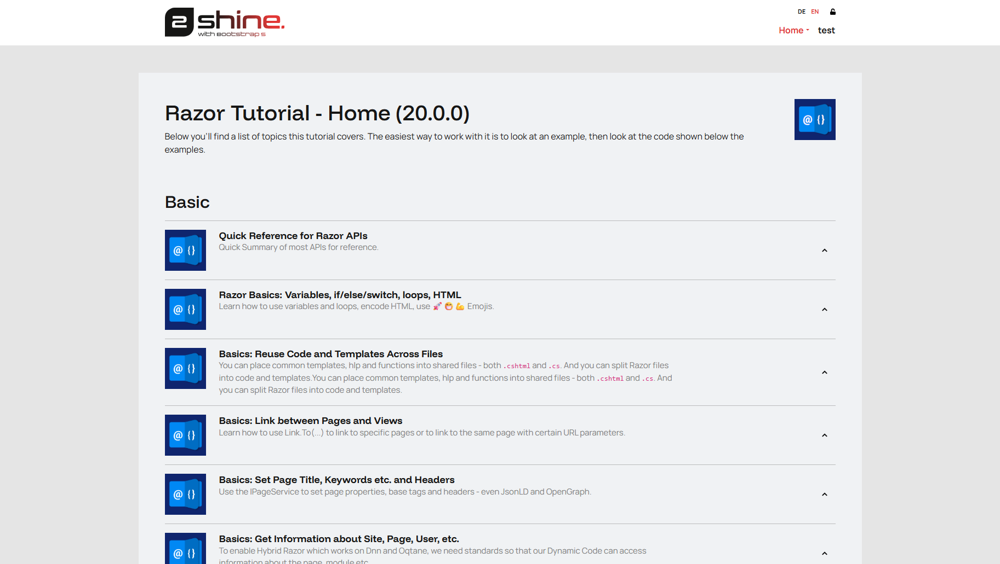
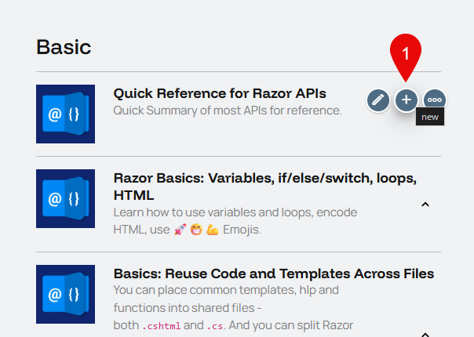
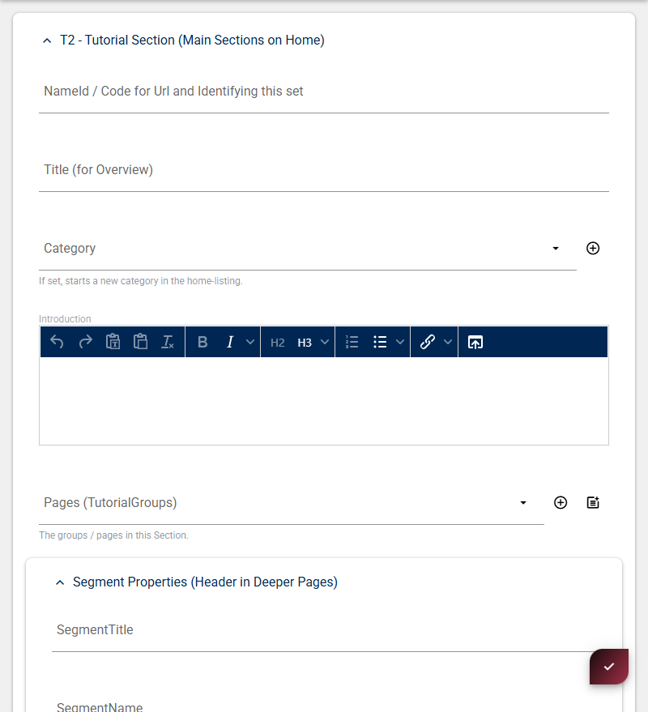
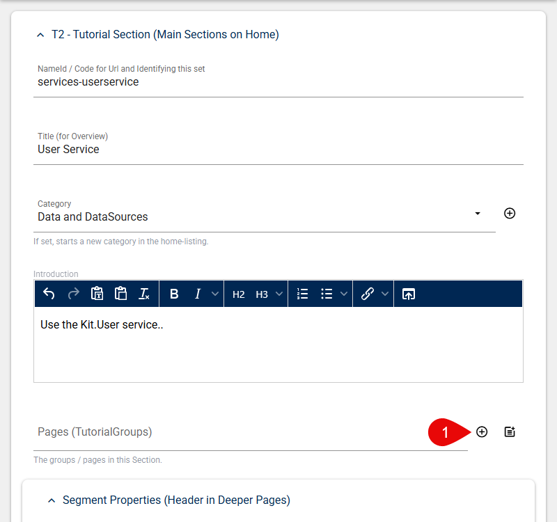
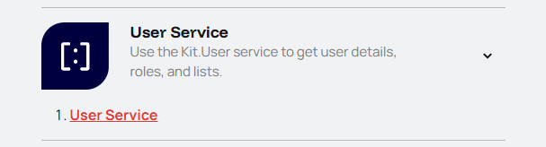
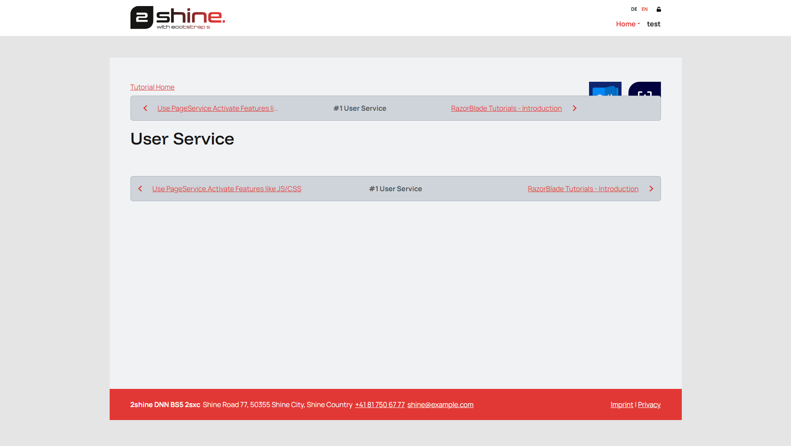

Get Started
A quick pathway to get you started in minutes. For detailed information visit the verbose information docs page.
Preparations
On app-dev.2sxc.org/tutorial-razor/ login to be able to edit the apps content.
you should end up on this page (see screenshot):

Create a new Section
When you want to create a completely new tutorial you first need to create one using the toolbar on any existing sextino. Just press new.

Filling out basic infos
Greeted with this the create-dialog...

... you will need to fill out the following basic infos:
| Field | Description | Example |
|---|---|---|
| NameId | Identifier for this set | services-userservice |
| Title | Title for the Overview | User Service |
| Category | Where this tutorial belongs | Data and DataSources |
| Introduction | Basic description | Use the Kit.User service.. |
Then you will need to add one or multiple new pages for the tutorials. Start with only one default page.

Here you will also need fill in some basic infos so the app knows how to handle the page.
| Field | Description | Example |
|---|---|---|
| NameId | Url path (everything before -page will be in the url). The NameId must end with -page as it is a convention | userservice-page |
| Is an Accordion | Set this option to Is a Standalone Page | True |
Leave the rest as is for now.
Back on the home page the new set should have been created with the selected Icon, Title etc. and contain the Link to the new Tutorial page.

The new tutoral page should look like this: 
Metadata
Diffentet kinds of metadata can be set in the Linking to this Page group.
Create Snippets (Page Content)
With the new page in place you can start adding page content by creating new Snippets